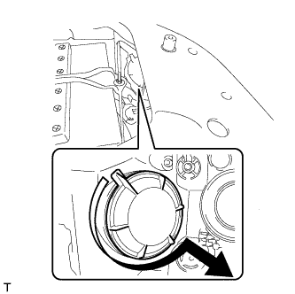
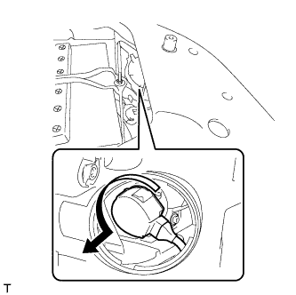
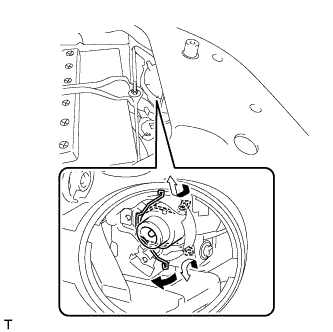

HIGH INTENSITY DISCHARGE HEADLIGHT BULB > REMOVAL |
| 1. DISCONNECT CABLE FROM NEGATIVE BATTERY TERMINAL |
| Condition | Waiting Time |
| Vehicle enrolled in G-BOOK system | 6 minutes |
| Vehicle not enrolled in G-BOOK system | 1 minute |
| 2. REMOVE UPPER RADIATOR SUPPORT SEAL (for RH Side) |
 |
Remove the 13 clips and upper radiator support seal.
| 3. REMOVE NO. 1 HEADLIGHT BACK COVER |
|  |
Turn the back cover in the direction indicated by the arrow and remove it.
| 4. REMOVE DISCHARGE HEADLIGHT BULB |
|  |
Turn the headlight control ECU socket in the direction indicated by the arrow and disconnect the headlight control ECU socket.
|  |
Release the set spring lock as shown in the illustration and remove the bulb.